1940-72 Chevy & GMC Pickup/ Suburban
36 products
 1940-46 Chevy Pickup VHX InstrumentsVHX-40C-PU$995.00
1940-46 Chevy Pickup VHX InstrumentsVHX-40C-PU$995.00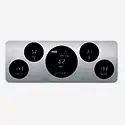
1940-46 Chevy/ GMC Pickup Digital Instrument SystemVFD3-40C-PU$815.00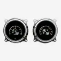
GRFX-47C-PU: 1947-53 Chevy/GMC Pickup GRFX InstrumentsGRFX-47C-PU$2,000.00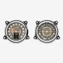
1947-53 Chevy/ GMC Pickup RTX InstrumentsRTX-47C-PU-X$1,765.00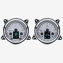
1947-53 Chevy/ GMC Pickup HDX InstrumentsHDX-47C-PU$1,625.00 1947-53 Chevy/ GMC Pickup VHX InstrumentsVHX-47C-PU$995.00
1947-53 Chevy/ GMC Pickup VHX InstrumentsVHX-47C-PU$995.00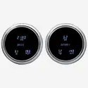
1947-53 Chevy/ GMC Pickup Digital Instrument SystemVFD3-47C-PU$835.00- 1954 Chevy Pickup RTX InstrumentsRTX-54C-PU-X$1,765.00
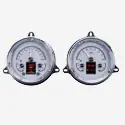
1954 Chevy Pickup HDX InstrumentsHDX-54C-PU$1,625.00 1954 Chevy Pickup VHX InstrumentsVHX-54C-PU$995.00
1954 Chevy Pickup VHX InstrumentsVHX-54C-PU$995.00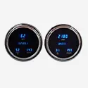
1954 Chevy Series One Pickup Digital Instrument SystemVFD3-54C-PU$835.00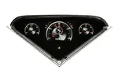
GRFX-55C-PU: 1955-59 Chevy Pickup, GRFX InstrumentsGRFX-55C-PU$2,000.00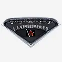
1955-59 Chevy Pickup RTX InstrumentsRTX-55C-PU-X$1,765.00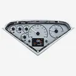
1955-59 Chevy Pickup HDX InstrumentsHDX-55C-PU$1,625.00 1955-59 Chevy Pickup VHX InstrumentsVHX-55C-PU$995.00
1955-59 Chevy Pickup VHX InstrumentsVHX-55C-PU$995.00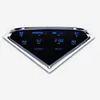
1955-59 Chevy Pickup Digital Instrument SystemVFD3-55C-PU$725.00 1955-59 GMC Pickup RTX InstrumentsRTX-55-GMC-X$1,765.00
1955-59 GMC Pickup RTX InstrumentsRTX-55-GMC-X$1,765.00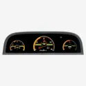
GRFX-60C-PU: 1960-63 Chevy Pickup GRFX InstrumentsGRFX-60C-PU$2,100.00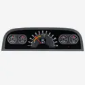
1960-63 Chevy Pickup RTX InstrumentsRTX-60C-PU-X$1,765.00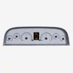
1960-63 Chevy Pickup HDX InstrumentsHDX-60C-PU$1,625.00 1960-63 Chevy Pickup VHX InstrumentsVHX-60C-PU$995.00
1960-63 Chevy Pickup VHX InstrumentsVHX-60C-PU$995.00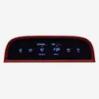
1960-63 Chevy Pickup Digital Instrument SystemVFD3-60C-PU$835.00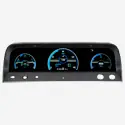
GRFX-64C-PU: 1964-66 Chevy Pickup GRFX InstrumentsGRFX-64C-PU$2,100.00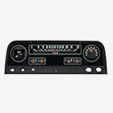
1964-66 Chevy Pickup RTX InstrumentsRTX-64C-PU-X$1,765.00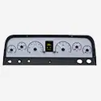
1964-66 Chevy Pickup HDX InstrumentsHDX-64C-PU$1,625.00 1964-66 Chevy Pickup VHX InstrumentsVHX-64C-PU$995.00
1964-66 Chevy Pickup VHX InstrumentsVHX-64C-PU$995.00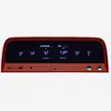
1964-66 Chevy Pickup Digital Instrument SystemVFD3-64C-PU$835.00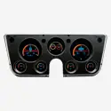
GRFX-67C-PU: 1967-72 Chevy Pickup GRFX InstrumentsGRFX-67C-PU$2,100.00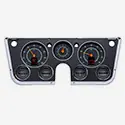
1967-72 Chevy/ GMC Pickup RTX InstrumentsRTX-67C-PU-X$1,895.00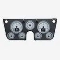
1967-72 Chevy/ GMC Pickup HDX InstrumentsHDX-67C-PU$1,725.00 1967-72 Chevy/ GMC Pickup VHX InstrumentsVHX-67C-PU, VHX-67C-PA$1,075.00
1967-72 Chevy/ GMC Pickup VHX InstrumentsVHX-67C-PU, VHX-67C-PA$1,075.00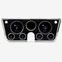
1967-72 Chevy/ GMC Pickup Digital Instrument SystemVFD3-67C-PU$835.00 1970-72 Chevy Chevelle SS/Monte Carlo/El Camino & 71 GMC Sprint SP RTX InstrumentsRTX-70C-CVL-X$1,765.00
1970-72 Chevy Chevelle SS/Monte Carlo/El Camino & 71 GMC Sprint SP RTX InstrumentsRTX-70C-CVL-X$1,765.00 1970-72 Chevy Chevelle SS/Monte Carlo/El Camino & 71 GMC Sprint SP HDX InstrumentsHDX-70C-CVL$1,625.00
1970-72 Chevy Chevelle SS/Monte Carlo/El Camino & 71 GMC Sprint SP HDX InstrumentsHDX-70C-CVL$1,625.00 1970-72 Chevy Chevelle SS/Monte Carlo/El Camino & 71 GMC Sprint SP VHX InstrumentsVHX-70C-CVL$1,075.00
1970-72 Chevy Chevelle SS/Monte Carlo/El Camino & 71 GMC Sprint SP VHX InstrumentsVHX-70C-CVL$1,075.00 1970-72 Chevy Chevelle SS/Monte Carlo/El Camino & 71 GMC Sprint SP Digital Instrument SystemVFD3-70C-CVL$965.00
1970-72 Chevy Chevelle SS/Monte Carlo/El Camino & 71 GMC Sprint SP Digital Instrument SystemVFD3-70C-CVL$965.00
Not sure what fits?
Talk to a tech in Sioux Falls, Monday to Friday, 8am to 5pm Central.